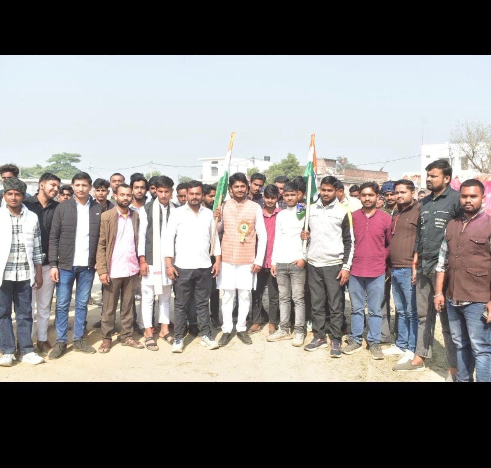
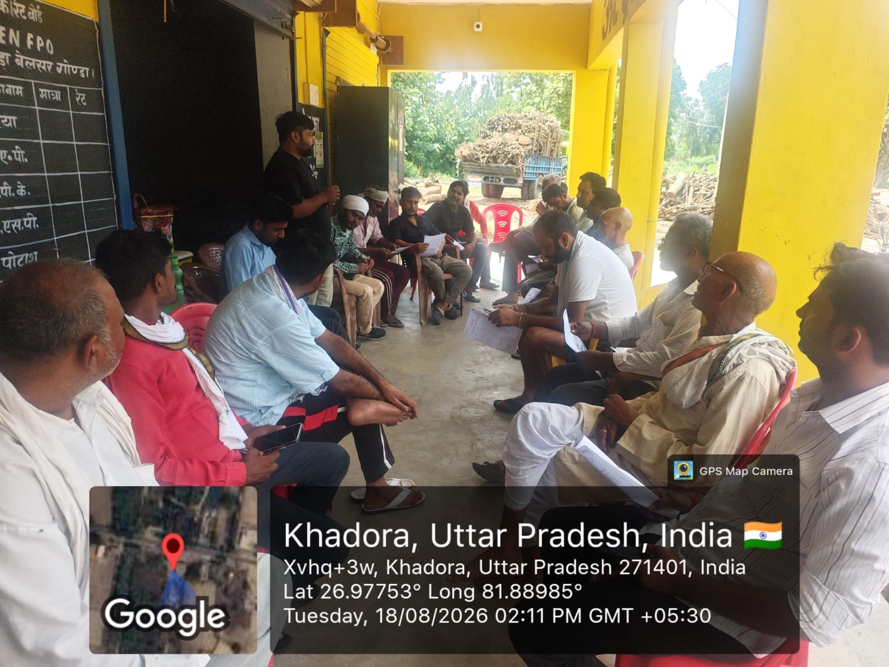
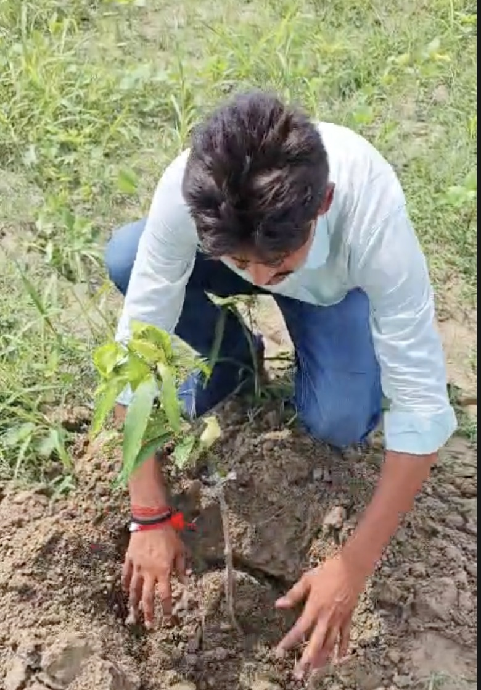

Youth Leadership Gatherings
Volunteers and students convening in Nawabganj to discuss community challenges, civic initiatives, and skill opportunities.
Yuva Prerna Foundation
Master Computer Institute's association with Yuva Prerna Foundation reflects a shared commitment to education, youth development, skill-building and community welfare across Nawabganj, Gonda, and surrounding rural areas.

Nawabganj, Gonda, Uttar Pradesh (PIN 271303)
Yuva Prerna Foundation is an active non-governmental organization headquartered in Nawabganj, Gonda, dedicated to holistic community welfare and grassroots development. Founded with the vision of inspiring and mobilizing youth towards positive societal transformation, the foundation focuses on expanding access to practical education, organizing healthcare assistance drives, supporting underprivileged families, and fostering civic environmental responsibility.
Empowering learners with fundamental and career-oriented computer education to bridge the digital gap in rural areas.
Organizing voluntary preventive health drives, awareness sessions, and medical assistance for rural families.
Standing with vulnerable individuals and households through direct humanitarian aid and emergency relief.
Inspiring young leaders to take ownership of environmental conservation and positive local community progress.
Key grassroots milestones published by Yuva Prerna Foundation across Nawabganj and surrounding rural regions in Gonda district.
Volunteers and students convening in Nawabganj to discuss community challenges, civic initiatives, and skill opportunities.

Public awareness marches and village outreach sessions to spread literacy awareness, preventive hygiene, and social harmony.

Active sapling planting along roads, school campuses, and community grounds to enhance local green cover and ecological care.
Guiding youth volunteers on ethical leadership, educational mentoring, and structured community service programs.
Education and community participation can create meaningful opportunities. Explore the work of Yuva Prerna Foundation and learn how you can contribute to our collective mission.